This chapter describes a Csound implementation of a multi-effects processor. Several categories of effects are presented including dynamics processing, filtering and pitch effects. Robin Whittle's zak opcodes provide a flexible method of routing between the effects routines. The pluck opcode is used to demonstrate these effects since many of them are often used with guitar.
Communication between effects is handled by the zak opcodes. One advantage of the zak system over global variables is that communications between instruments may be reconfigured in the score without making changes to the orchestra. To utilize the zak opcodes they must first be initialized which is done with the following statement: zakinit num-a-rate, num-k-rate where num-a-rate and num-k-rate are the number of audio rate and control rate channels allocated.
Communications between effects are accomplished using zaw and zar. To write to an audio channel zaw asig, ichannel is used. To read from an audio channel asig zar ichannel is used. Here asig is the audio signal and ichannel is the number of the channel.
The zawm opcode mixes the current contents of the audio channel with the new audio data. During a chord several instances of the pluck instrument are active at the same time so the pluck instrument uses zawm to accumulate sound. The audio channels must be cleared every sample period or the data will continue to accumulate. The mixer is the last instrument in the orchestra and is used to clear audio channels 0-30 with the statement zacl 0, 30.
The mixer reads from four audio channels and provides independent gain and pan control for each channel.
| asig1 | zar | p4 |
| igl1 | init | p5*p6 |
| igr1 | init | p5*(1-p6) |
| asig2 | zar | p7 |
| igl2 | init | p8*p9 |
| igr2 | init | p8*(1-p9) |
| asig3 | zar | p10 |
| igl3 | init | p11*p12 |
| igr3 | init | p11*(1-p12) |
| asig4 | zar | p13 |
| igl4 | init | p14*p15 |
| igr4 | init | p14*(1-p15) |
| asigl | = | asig1*igl1+asig2*igl2+asig3*igl3+asig4*igl4 |
| asigr | = | asig1*igr1+asig2*igr2+asig3*igr3+asig4*igr4 |
This section describes a compressor, a limiter, a noise gate, a de-esser and a distortion effect.1 These are all related effects which change the dynamics of the sound.
A compressor is used to reduce the dynamic range of a signal. It does this by monitoring the level of an input signal and varying the gain applied to the output signal. Sounds greater than a specified level are reduced in volume. The rms opcode can be used to give a time average of the level of the input signal. The output from rms is used to reference a table which determines the amount of gain applied to the output signal. A post gain is usually included to restore the level of the output signal after it has been compressed. The rms opcode does not respond immediately to changes in level so that sudden attacks are sometimes allowed to pass. To avoid this the original signal is monitored and compression is applied to a time delayed copy of the signal. In this example a delay time equal to one half of the rms averaging time is used.
| asig | zar | iinch | ; Read | input |
| kamp | rms | asig, ifqc | : Find RMS | level |
| kampn | = | kamp/30000 | ; Normalize | RMS |
| kcomp | tablei | kampn,itab,1,0 | ; Look up | compress |
| adel1 | delayr | ideltm | ; Delay for | ideltm |
| delayw | asig | ; Write to | delay | |
| acomp | = | kcomp*adel1*ipostgain | ; Apply | compression |
| zaw | acomp*kenv, ioutch | ; declick & | output |
The amount of compression is given by the compression curve f6. Compression levels of 2:1 and 4:1 are common.
| f6 | 13 | 1025 | 7 | 1 | 256 | 1 | 256 | .5 | 513 | .5 |
The compressor block diagram is presented in figure 30.1.
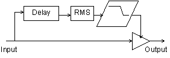
Figure 30.1 Compressor/Limiter block diagram.
The limiter is merely a compressor with a very severe compression curve. Limiters prevent a signal level from going above a specified limit. Limiters commonly use compression levels of 10:1 or 100:1. This can be implemented by simply using a different compression table:
| f6 | 13 | 1025 | 7 | 1 | 256 | 1 | 512 | .01 | 129 | .01 |
Noise gates are used to remove unwanted background noise and hiss from a signal. A noise gate can be implemented by changing the f6 table again.
| f6 | 13 | 1025 | 7 | 0 | 64 | 0 | 0 | 1 | 448 | 1 | 513 | 1 |
In this case signals below a certain level are completely silent. Once they exceed that level they are allowed to pass. Noise gates are sometimes criticized for removing playing dynamics. To solve this problem a delayed signal is used to determine the level and the original signal is modified and output. This results in the gate opening just before playing begins. This technique can also be used on a compressor to prevent compression of initial playing dynamics.
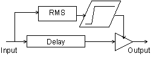
Figure 30.2 Noise Gate block diagram.
| asig | zar | iinch | ; Read | from | input |
| adel1 | delayr | ideltm | ; Delay | the | signal |
| delayw | asig | ||||
| kamp | rms | adel1, ifqc | ; Calculate | RMS | |
| kampn | = | kamp/30000 | ; Normalize | to | 0-1 |
| kcomp | tablei | kampn,itab,1,0 | ; Reference | the | table |
| acomp | = | kcomp*asig*ipostgain | ; Apply | noise | gate |
| zaw | acomp*kenv, ioutch | ; Declick | and | write |
The next effect considered in this section is the de-esser. Certain consonant sounds such as 's' and 'p' produce loud artifacts when a microphone is used. The de-esser is a relative of the compressor which can be used to reduce these artifacts. The de-esser monitors the level of the high frequency component of the signal and applies compression to the signal based on this level. This can be implemented by applying a high pass filter to the input signal and monitoring the level of the filtered signal.
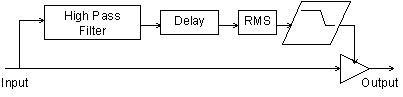
Figure 30.3 De-Esser block diagram.
| asig | zar | iinch | ; Read input | |
| afilt | butterhp | asig, ifco | ; Highpass | filter |
| kamp | rms | afilt, ifqc | ; Calculate | RMS |
| kampn | = | kamp/30000 | ; Normalize | RMS 0-1 |
| kcomp | tablei | kampn,itab,1,0 | ; Look up in | table |
| adel1 | delayr | ideltm | ; Delay signal | |
| delayw | asig | |||
| acomp | = | kcomp*adel1*ipostgain | ; Apply de-ess | |
| zaw | acomp*kenv, ioutch | ; Declick and | output |
This section describes a distortion effect. An amplifier can be considered as having two operating ranges: a linear range, and a non-linear range. In the linear range of operation the output signal is an amplified copy of the input signal. In the non-linear range of operation the output signal is a distorted version of the input signal. Early electronic amplifiers were based on vacuum tubes. Vacuum tube distortion is usually described as warmer and more musical than other types of distortion.
If a sine wave signal is passed through an overdriven tube amplifier the resulting waveform differs from the original in several ways. The top of the waveform becomes flattened or clipped. The bottom of the waveform is also flattened although not as much as the top. The duty cycle of the waveform is also shifted so that the upper part of the curve is not the same width as the lower part of the curve. The resulting shape is approximated in figure 30.4.
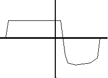
Figure 30.4 Waveform of a sine wave processed through a tube amplifier.
Waveshaping may be used to reshape the input waveform to resemble figure 30.4. For slight distortion use the following table:
| f5 | 0 | 8192 | 8 | -.8 | 336 | -.78 | 800 | -.7 | 5920 | .7 | 800 | .78 | 336 | .8 |
For heavy distortion use the following table:
| f5 | 0 | 8192 | 7 | -.8 | 934 | -.79 | 934 | -.77 | 934 | -.64 | 1034 | -.48 | 520 | .47 | 2300 | .48 | 1536 | .48 |
A shifted duty cycle can be accomplished by implementing an amplitude dependent delay line.
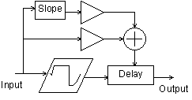
Figure 30.5 Distortion block diagram.
| asigin | zar | izin |
| aold | = | asig |
| asig | = | igaini*asigin/60000 |
| aclip | tablei | asig,5,1,.5 |
| aclip | = | igainf*aclip*15000 |
| atemp | delayr | .1 |
| adel1 | deltapi | (2-iduty*asig)/1500+islope*(asig-aold)/300 |
| delayw | aclip | |
| zaw | adel1, izout |
This section describes an equalizer, a wah-wah and a resonant low pass filter.
An equalizer can be used to increase or decrease the level of different frequencies in a signal. In this example a three band equalizer is implemented. The butterlp and butterhp opcodes are used to isolate the low and high frequency components of the signal. The midrange component is isolated by high pass filtering above the low pass cut off frequency and low pass filtering below the high pass cut off frequency. Individual gains are applied to each of the three signal components before they are added together and output.
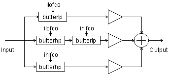
Figure 30.6 A 3-Band Equalizer block diagram.
| alosig | butterlp | asig, ilofco | ; Low | pass |
| atmpsig | butterhp | asig, ilofco-ilofco/4 | ; Midrange | 1 |
| amidsig | butterlp | atmpsig, ihifco+ihifco/4 | ; Midrange | 2 |
| ahisig | butterhp | asig, ihifco | ; Hi | pass |
| aout | = | ilogain*alosig+imidgain*amidsig+ihigain*ahisig |
A wah-wah pedal is a type of low-pass filter which incorporates several resonances to give it a unique character. In this example several resonances derived from vowel sounds "ahh" and "ooh" are used to add character to the standard low pass filter sound. The vowel "ahh" has resonances and amplitudes of 730 Hz -1 db, 1090 Hz -5 db, 2440 Hz -28 db. The vowel "ooh" has resonances of 300 Hz -3 db, 870 Hz -19 db, 2240 Hz -43 db. As the frequency is swept from high to low the resonances are swept from "ahh" to "ooh."
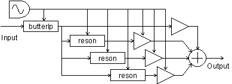
Figure 30.7 Wah-Wah.
| kosc1 | oscil | .5, irate, itab1, .25 | ; Oscilator |
| kosc2 | = | kosc1+.5 | ; Rescale for 0-1 |
| kosc3 | = | kosc2 | ; Formant Depth |
| klopass | = | idepth*kosc2+ilow | ; Filter range |
| kform1 | = | 430*kosc2+300 | ; Formant 1 range |
| kamp1 | = | ampdb(-2*kosc3+59)*ifmix | ; F1 level |
| kform2 | = | 220*kosc2+870 | ; F2 range |
| kamp2 | = | ampdb(-14*kosc3+55)*ifmix | ; F2 level |
| kform3 | = | 200*kosc2+2240 | ; F3 range |
| kamp3 | = | ampdb(-15*kosc3+32)*ifmix | ; F3 level |
| afilt | butterlp | asig, klopass | ; Lowpass |
| ares1 | reson | afilt, kform1, kform1/8 | ; Apply |
| ares2 | reson | afilt, kform2, kform1/8 | ; formant |
| ares3 | reson | afilt, kform3, kform1/8 | ; filters 1-3 |
| aresbal1 | balance | ares1, afilt | ; Restore |
| aresbal2 | balance | ares2, afilt | ; balance |
| aresbal3 | balance | ares3, afilt | |
| aout | = | afilt+kamp1*aresbal1 | ; Add signals |
| aout | = | aout+kamp2*aresbal2+kamp3*aresbal3 |
Some theory of resonant filters can be found in the chapter "Classic Keyboard Instruments" and will not be discussed here in detail. This implementation uses the nlfilt opcode which avoids the need of setting kr=sr and also provides for simpler code. This filter is designed to resonate for approximately the same amount of time no matter what the cut-off frequency is.
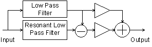
Figure 30.8 Low pass resonant filter block diagram.
| kfco | oscil | 1, 1/idur, itab1 | ; Cut-off frequency sweep |
| kfcort | = | sqrt(kfco) | ; by table 1 |
| krezo | oscil | 1, 1/idur, itab2 | ; Resonance sweep |
| krez | = | krezo * kfco/500 | ; by table 2 |
| kamp | linseg | 0, .002, 1, p3-.004, 1, .002, 0 | ; Declick |
| axn | zar | izin | |
| ka1 | = | 1000/krez/kfco-1 | ; Resonant LP filter |
| ka2 | = | 100000/kfco/kfco | |
| kb | = | 1+ka1+ka2 | |
| ay1 | nlfilt | axn/kb, (ka1+2*ka2)/kb, -ka2/kb, 0, 0, 1 | |
| ay | nlfilt | ay1/kb, (ka1+2*ka2)/kb, -ka2/kb, 0, 0, 1 | |
| ka1lp | = | 1000/kfco-1 | ; Lowpass filter |
| ka2lp | = | 100000/kfco/kfco | |
| kblp | = | 1+ka1lp+ka2lp | |
| aylp | nlfilt | ay1lp/kblp, (ka1lp+2*ka2lp)/kblp, ka2lp/kblp, 0, 0, 1 | |
| ayrez | = | ay - aylp | ; Extract the resonance |
| ayrz | = | ayrez/kfco | ; Adjust res. gain |
| ay2 | = | ylp*6*ilpmixa+ayrz*300*irzmix | ; Mix Q & LP |
This section describes vibrato, pitch shifting, chorus and flanging effects. All of these effects make use of delay lines whose delay times are modulated with an oscillator. An interpolating delay tap, deltapi, is used to allow continuous variation of the delay time.
Vibrato can be accomplished by modulating a variable delay tap with a sine wave. When the delay tap sweeps forward in the same direction as the signal the pitch is lowered. As the delay tap sweeps backwards in the opposite direction of the signal the pitch is raised.
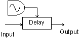
Figure 30.9 Vibrato block diagram.
| asig | zar | izin |
| kosc | oscil | iamp, ifqc, itab1 |
| atemp | delayr | imax |
| aout | deltapi | kosc+imax/2 |
| delayw | asig | |
| zaw | aout, izout |
A simple type of pitch shifting can be implemented with a variable length interpolating delay tap. The delay time is modulated with a sawtooth wave whose amplitude is equal to the wavelength of the sound. This results in a resampling of the wave form with linear interpolation between successive samples. Lowering the pitch results in cycles being discarded periodically. Raising the pitch results in some cycles being repeated. In order to produce a good quality sample the wavelength of the sound must be known. In this example it is simply supplied when the instrument is called.
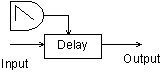
Figure 30.10 Pitch Shifter block diagram.
Chorus is an effect which attempts to make one instrument sound like more than one instrument. The resulting sound is thicker than the original sound. Chorus can be implemented by adding the original signal to a frequency modulated delayed signal. The signal is typically delayed between 20 and 30 msec. Gain is applied to control the amount of mix between the original signal and the delayed signal. Common waveforms used to modulate the signal are sine, triangle and logarithmic waves.
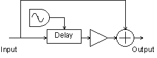
Figure 30.11 Chorus block diagram.
| kamp | linseg | 0, .002, 1, p3-.004, 1, .002, 0 |
| asig | zar | izin |
| aosc1 | oscil | idepth, irate, iwave, iphase |
| aosc2 | = | aosc1+ideloff |
| atemp | delayr | idepth+ideloff |
| adel1 | deltapi | aosc2 |
| delayw | asig | |
| aout | = | (adel1*imix+asig)/2*kamp |
| zaw | aout, izout |
A stereo chorus effect can be created by having two choruses one quarter cycle out of phase of each other and sending the output of each to a separate channel. Many choruses can be combined with different phases, waveforms and delay times to produce a very rich sound.
| ; | Ins | Sta | Dur | Rate | Depth | Wave | Mix | Delay | Phase | InCh | OutCh |
| i | 35 | 0 | 1.6 | .5 | 2 | 1 | 1 | 25 | 0 | 2 | 3 |
| i | 35 | 0 | 1.6 | .5 | 2 | 1 | 1 | 20 | .25 | 2 | 4 |
Flanging was originally produced by taking two tapes with the same music on them and playing at them at the same time. By pushing on the flanges of one of the tape reels the playback speed of one of the copies of the sound was modulated. This detuning of the signal results in areas of constructive and destructive interference as the different frequencies move in and out of phase with each other. This produces notches in the audio spectrum. As the frequency of the modulated signal is swept back and forth these notches move closer together and farther apart. This produces the characteristic "jet airplane" effect. In this implementation the original signal is added to a delayed signal. The delay time is modulated by a sine wave so that the pitch of the delayed signal is modulated. The combined signal is then fed back into the beginning of the delay path which makes a more pronounced flanging effect. Typical delay times are 10 msec.
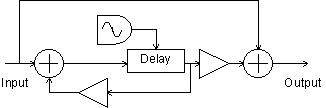
Figure 30.12 Flanger block diagram.
| asig1 | = | asig+ifdbk*adel1 |
| aosc1 | oscil | idepth, irate, iwave, iphase |
| aosc2 | = | aosc1+ideloff |
| atemp | delayr | idepth+ideloff |
| adel1 | deltapi | aosc2 |
| delayw | asig1 | |
| aout | = | (imix*adel1+asig)/2 |
A stereo flanger can be implemented by running two flangers at one quarter cycle out of phase from each other and sending each to a separate channel as follows:
| ; | Sta | Dur | Rate | Depth | Wave | Feedbk | Mix | Delay | Phase | InCh | OutCh |
| i30 | 4 | 1.6 | .5 | 1 | 1 | .8 | 1 | 1 | 0 | 2 | 3 |
| i30 | 4 | 1.6 | .5 | 1 | 1 | .8 | 1 | 1 | .25 | 2 | 4 |
This section describes a digital delay, a panner, a tremolo effect and simple reverb effect.
This section describes a stereo delay with cross feedback. The delayr and delayw opcodes provide a straight forward implementation of this. The right and left channels are delayed independently. The delayed signal from each channel may be mixed with the original signal either channel.
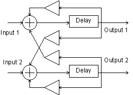
Figure 30.13 Stereo Delay block diagram.
| aoutl | init | 0 |
| aoutr | init | 0 |
| asigl | zar | izinl |
| asigr | zar | izinr |
| aoutl | delayr | itim1 |
| delayw | asigl+ifdbk1*aoutl+ixfdbk1*aoutr | |
| aoutr | delayr | itim2 |
| delayw | asigr+ifdbk2*aoutr+ixfdbk2*aoutl | |
| zaw | aoutl, izoutl | |
| zaw | aoutr, izoutr |
Tremolo is usually considered to be a periodic variation in the volume of a sound. This can be implemented by generating a low frequency oscillating sine wave between 0 and 1 in amplitude and simply multiplying the input signal by this.
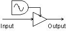
Figure 30.14 Tremolo block diagram.
| kosc | oscil | iamp, ifqc, itab1 |
| aout | = | asig*(kosc+1) |
A square wave can be used to generate an amplitude gated sound.
A panner can be implemented by multiplying one channel by a low frequency sine wave and multiplying the other channel by one minus the low frequency sine wave so that the channels are 180 degrees out of phase with each other. This way the signal is swept from one channel to the other by the oscillator.
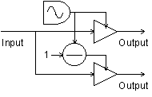
Figure 30.15 Panner block diagram.
| asig | zar | izin |
| kosc | oscil | iamp, ifqc, itab1 |
| kpanl | = | (kosc+1)/2 |
| kpanr | = | 1-kpanl |
| aoutl | = | asig*kpanl |
| aoutr | = | asig*kpanr |
| zaw | aoutl, izoutl | |
| zaw | aoutr, izoutr |
All sound produces some type of reverberation as the sound waves are reflected and absorbed on surfaces in the listening environment. The type of reverb depends on the size, shape and material of the area in which the sound is produced. A concert hall can produce a very rich spacious reverb. Artificial reverb is often added to signals to make them sound as if they were generated in a specific type of area such as a concert hall. Reverberation can be simulated by using a combination of all pass filters, comb filters and delays. Csound provides a reverb2 opcode for generating simple reverbs. This is used in the following instrument to create a very simple reverb. There are many excellent examples of reverb available in the Csound archives which can be modified to work with the system presented in this chapter.
| asig | zar | izin |
| aout | reverb2 | asig, irvtime, irvfqc |
| zaw | aout/5, izout |
Hopefully this section has provided insight into the theory and implementation of many of the most popular sound effects and has provided inspiration for further audio experiments. Some further ideas to try would be to use different waveforms with the pitch based effects, try calling the chorus routine many times with different parameters and waveforms to produce a dense chorusing effect. Try setting up different types of distortion and then devise an instrument to oscillate between them. Add attack and decay envelopes to the dynamics effects. If you have a fast computer one of the first things you may wish to do is to implement real-time input and output for the effects.
Lehman, S. Effects Explained. http://www.harmony-central.com/Effects/.
Hamm, R., O. "Tubes Versus Transistors - Is There an Audible Difference?", Journal of the Audio Engineering Society, May 1973.
Cronin, Dennis "Examining Audio DSP Programs," Dr. Dobb's Journal, July 1994.